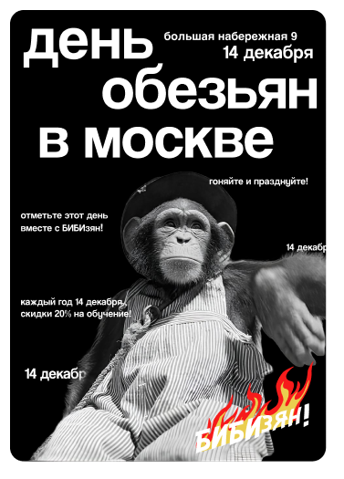
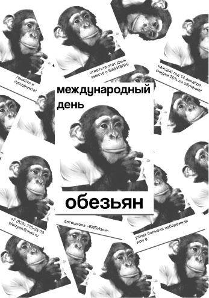
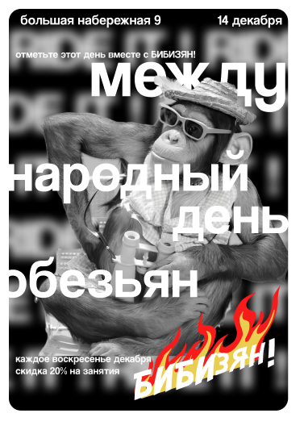
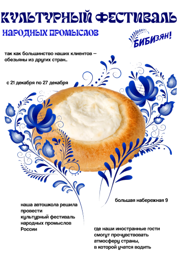
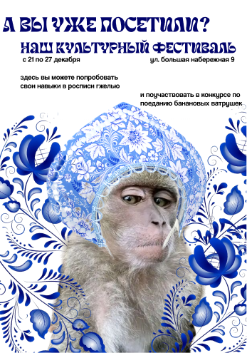
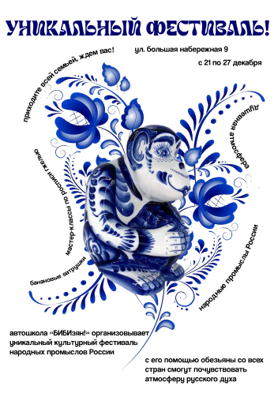
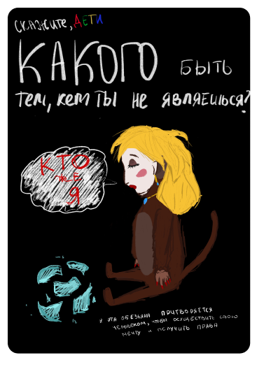
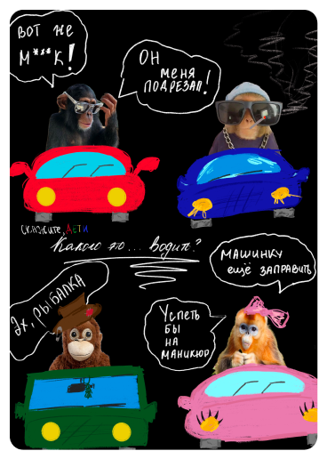
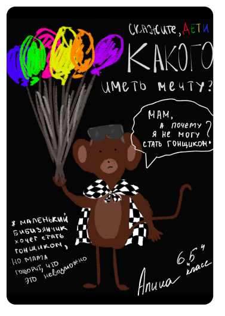

О НАС И НАШИХ МЕРОПРИЯТИЯХ
ПЕРВОЕ 14 ДЕКАБРЯ



Совсем недавно прошел день обезьян, который, безусловно, является одним из самых главных праздников года в нашем учебном заведении!
КУЛЬТУРНЫЙ ФЕСТИВАЛЬ



Наша автошкола решила создать культурный фестиваль, передающий атмосферу нашей любимой родины.
СКАЖИТЕ, ДЕТИ!



Так как вождение — новая часть жизни для наших маленьких друзей, мы попросили детей нарисовать, как жили обезьяны до открытия автошколы и как они представляют их день за рулём.
А ЧТО ЕЩЕ?
А еще, у нас есть интерактивные плакаты, с которыми каждый сможет поиграть